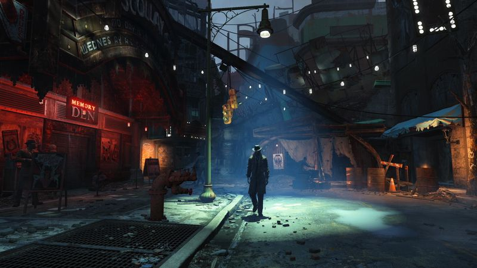
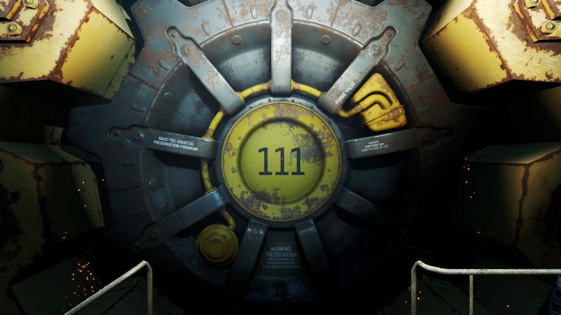

The thirty-second version
The dog is 10/10. We love it anyway.
I came for the story. I stayed to make Preston Garvey suffer.
Fallout 4 is the Bethesda RPG most likely to be labelled 'flawed' by people who then poured 300 hours into it. The shooting is finally good, the settlement building is a rabbit hole with no bottom, and the writing is uneven in the way Bethesda writing has always been. We had a great time and also complained the whole way through. That's a Bethesda game.
Okay, what is this thing?
The dog's name is Dogmeat and he does not deserve any of this. You've stumbled out of a vault into Boston, someone has stolen your baby, and there's a robot butler with more emotional intelligence than any of the humans left standing. Somewhere in the first hour you'll find a settlement full of people who need your help, which will consume the next six weeks of your life. Preston has another one for you.
The gunplay is the best the series has ever had, VATS is still a joy when you want tactics without the pause menu, and settlement mode is either a whole second game or a chore depending on the day. The main story doesn't fully land, but the moment-to-moment loot-and-explore stuff is Bethesda at close to full strength. Also, the power armour finally feels like power armour and not like a slightly heavier shirt.


Why it escaped the group chat
- Gunplay was tuned with input from id Software, so it feels far better than earlier Bethesda RPGs.
- Settlement building is entirely optional and also somehow eight hours of your evening.
- The dialogue wheel condenses your choices into four options and yes, that's the main complaint.
Three dads enter
01
Dad Who Skipped the Tutorial
I never opened the perk chart and I finished the game.
I picked up whatever gun the ground offered, wore whatever the dead were wearing, and shot ghouls in the head for sixty hours until the credits rolled. I don't know what a settlement is. I'm aware of Preston Garvey only as 'the guy who won't shut up' and I think power armour is 'the good chair'. I liked it a lot.
02
The Descent Guy
I respecced the whole build at level thirty. Twice.
I treat the SPECIAL system like a puzzle and I have a real opinion about which perks are traps. I also spent a full weekend on a settlement wall alignment that would make a city planner cry. Fallout 4 is Bethesda in prototype mode and I love that; it means the systems are pokeable and the mod scene is limitless. I run about twenty mods and refuse to name them.
03
Normal-ish Dad
It plays better in ninety-minute chunks than we'd expected.
Because the settlement stuff can be closed at any time and the map is dense with short stories, it works as a school-night game if you avoid the main plot missions. I finished it slowly over a summer on PC, put the settlement systems down when they got too fiddly, and had a genuinely great time. I've also got a soft spot for Nick Valentine.
Who it is for and what to watch
Invite these people
- Anyone who wanted a shooter with a real world to poke around in
- People who peace out the second Preston starts talking
- Dogmeat enthusiasts (all of us)
Dad caveats
- The main story is not the reason to be here
- Settlement mode will steal a week if you let it
- You'll want mods eventually, and they exist
Receipts
Two of us finished the base campaign on PC around launch; the third came back years later with mods and never actually left.